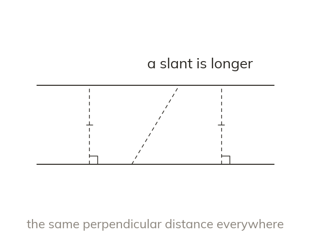

The same distance everywhere
Parallel lines stay the same perpendicular distance apart everywhere. Measure that distance at right angles, never along a slant.
Two lines are parallel when every point on one is the same perpendicular distance from the other. That distance is measured at right angles, never along a slant.